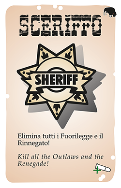
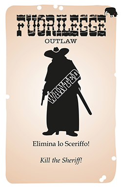
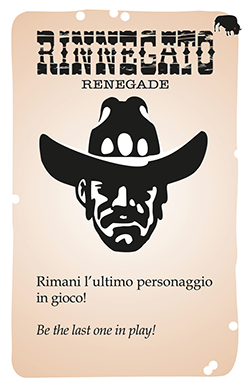
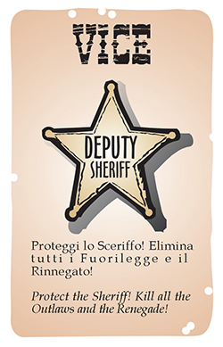
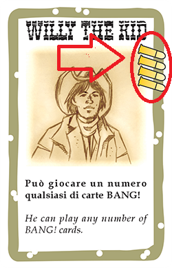
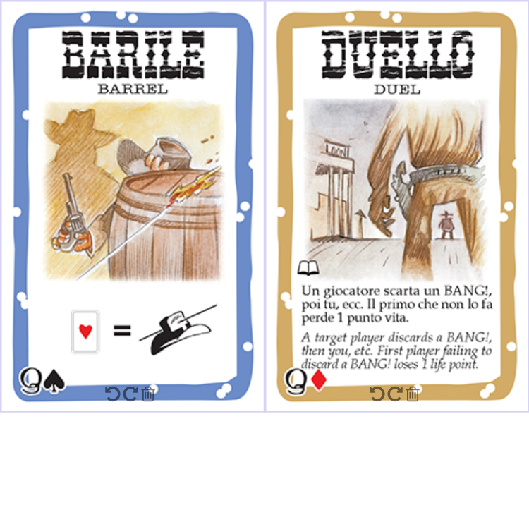

(numero giocatori 4-7)
"BANG!" è un gioco di sparatorie dove i partecipanti interpreteranno in prima persona i personaggi tipici di un contesto western. Alcuni dovranno interpretare il ruolo dei Fuorilegge altri dello Sheriffo: l’obiettivo primario dei banditi. Lo
Sceriffo è aiutato dai suoi Vice in incognito, ma c’è anche un Rinnegato che
persegue i propri scopi!
| Sceriffo: il suo compito è di eliminare tutti i Fuorilegge e il Rinnegato, riportando così l’ordine in città. |
 | ||
|  | Fuorilegge: vogliono eliminare lo Sceriffo, ma non hanno scrupoli a eliminarsi l’un l’altro per incassare le taglie sulle loro teste! |
||
| Rinnegato: vuole diventare il nuovo Sceriffo; il suo compito è di rimanere l’ultimo personaggio in gioco. |
 | ||
|  | Vice: aiutano e proteggono lo Sceriffo, e perseguono i suoi stessi obiettivi, anche a costo della loro vita! |
| SHERIFFO | FUORILEGGE | RINNEGATO | VICE | |
|---|---|---|---|---|
| 4 giocatori | 1 | 2 | 1 | |
| 5 giocatori | 1 | 2 | 1 | 1 |
| 6 giocatori | 1 | 3 | 1 | 1 |
| 7 giocatori | 1 | 3 | 1 | 2 |
Mescolateli e distribuitene uno a ciascun giocatore.
Lo sceriffo rivela la propria carta e la tiene scoperta. Tutti gli altri guardano
la propria carta ma mantengono segreto il loro ruolo.
Mischiate i personaggi e distribuitene uno, scoperto, a
ciascun giocatore. Ognuno annuncia il nome del proprio
personaggio, e ne illustra le abilità. Ciascuno prende tante
pallottole quante ne sono indicate sul personaggio.
Lo Sceriffo gioca tutta la partita con una pallottola in più:
se la sua carta personaggio riporta 3 pallottole, è come se a
tutti gli effetti ne avesse 4; se ce ne sono 4, lo Sceriffo gioca
con 5.
Riponete ruoli, plance, personaggi e pallottole non utilizzate
nella scatola.
Mischiate il mazzo di gioco. Ciascun giocatore riceve una mano di tante
carte coperte quante sono le proprie pallottole. Le restanti carte formano il
mazzo da cui pescare. Lasciate spazio per la pila degli scarti.

Lo sheriffo inizia il gioco e si segue un senso orario, il turno si suddivide in 3 parti:
Pesca due carte dal mazzo, se il mazzo finisce rimischia le carte scartate e usale come nuovo mazzo
Le carte che puoi giocare si suddivudono in blu e marroni:

La partita conclude quando: